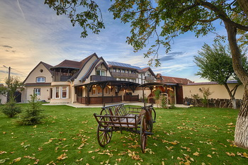

| Istoric | Contact |
|---|
Pensiunea La Robertini va fi infintata in judetul Brasov,Comuna Sinca Veche Aceasta va fi prima pensiune agroturistica din comuna Sinca Veche care va primii oaspeti pentru o ora sau doar pentru cateva ore . Nici chiar mica recepție nu dă vreun indiciu despre ce te-ai putea aștepta să găsești odată ce îți este înmânată cheia. Noi mai că ne-am simțit un pic ... circumspecți. Și ce surpriză plăcută am avut! Totul era ca din alt film față de ceea ce eram obișnuiți să găsim. Și nu e vorba despre dotări specifice clasificării (5 margarete) căci odată obținută, standardele trebuie respectate; e vorba despre ... altceva, căci Conacul nu arată deloc la fel ca un hotel obișnuit; este, în sine, o experiență. Pentru că nu ai cum să te simți „obișnuit” printre dantele și broderii, piese de mobilier vintage, pereți de cărămidă, obiecte de decor aduse de prin tot felul de țări. Totul bine aranjat și destul de bine întreținut (poate mai scapă ici-colo o crăpătură în var sau un mâner de geam mai încăpățânat). |
 | |
|---|---|---|